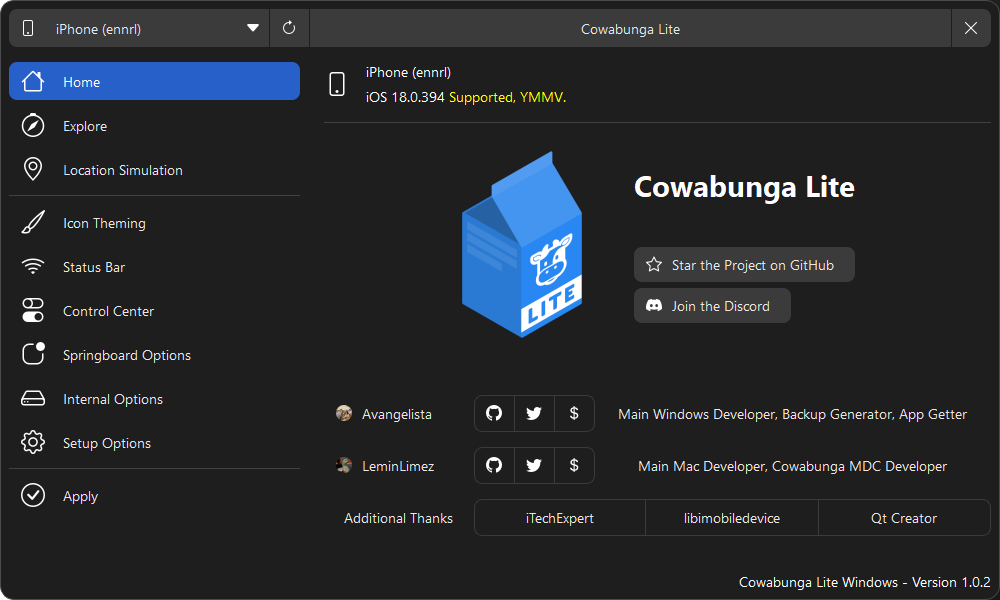
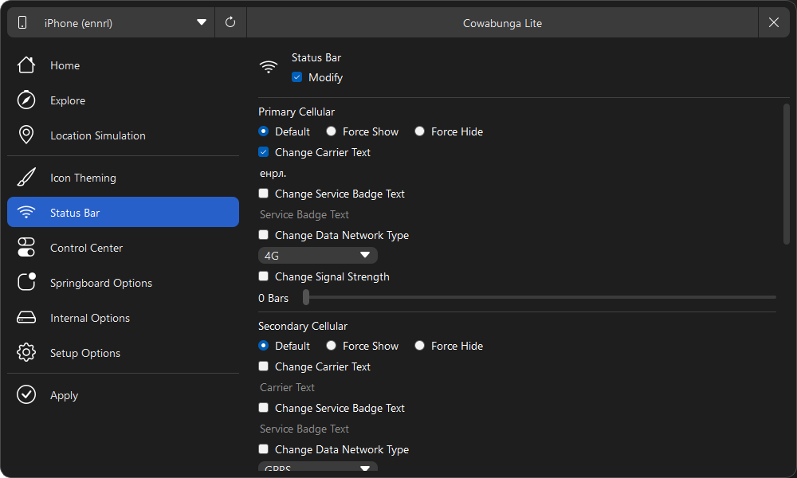
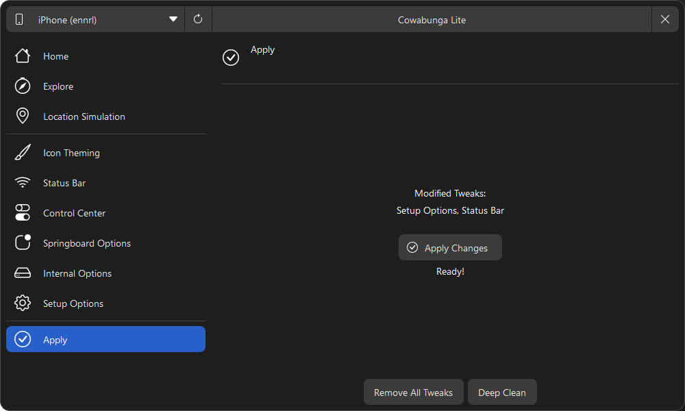
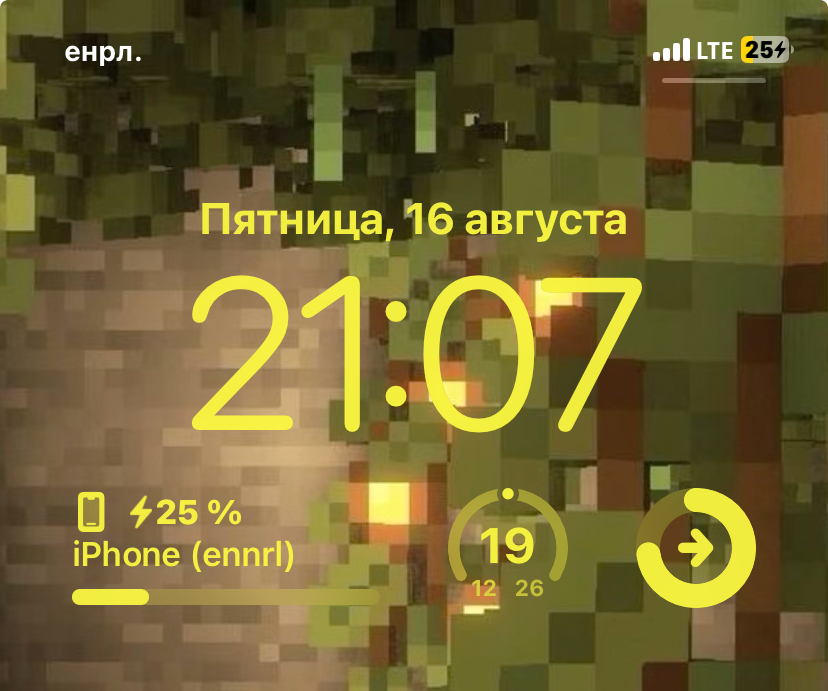
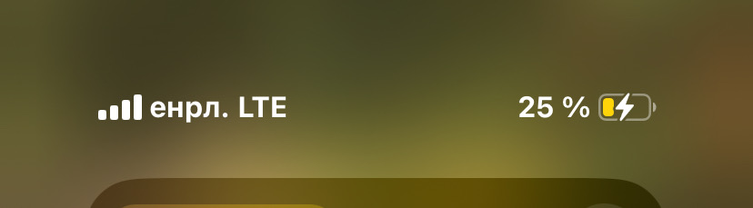

<?xml version="1.0" encoding="UTF-8"?><rss version="2.0"
	xmlns:content="http://purl.org/rss/1.0/modules/content/"
	xmlns:wfw="http://wellformedweb.org/CommentAPI/"
	xmlns:dc="http://purl.org/dc/elements/1.1/"
	xmlns:atom="http://www.w3.org/2005/Atom"
	xmlns:sy="http://purl.org/rss/1.0/modules/syndication/"
	xmlns:slash="http://purl.org/rss/1.0/modules/slash/"
	>

<channel>
	<title>iOS &#8212; Что? Как? Где? &#8212; енрл. production</title>
	<atom:link href="" rel="self" type="application/rss+xml" />
	<link>../../../index.html</link>
	<description></description>
	<lastBuildDate>Fri, 16 Aug 2024 19:22:03 +0000</lastBuildDate>
	<language>ru-RU</language>
	<sy:updatePeriod>
	hourly	</sy:updatePeriod>
	<sy:updateFrequency>
	1	</sy:updateFrequency>
	<generator>https://wordpress.org/?v=6.6.2</generator>
	<item>
		<title>iOS: Как сделать свой текст вместо Carrier</title>
		<link>../../../ios/2024/08/16/id63/index.html</link>
		
		<dc:creator><![CDATA[admin]]></dc:creator>
		<pubDate>Fri, 16 Aug 2024 18:10:40 +0000</pubDate>
				<category><![CDATA[iOS - Что? Как? Где?]]></category>
		<guid isPermaLink="false">../../../index.html?p=63</guid>

					<description><![CDATA[Добрый день всем подписчикам блога, а также людям которые просто попали на данную запись. Сегодня мы с вами будем изменять название сети на свой текст. В моем случае заменю на свой ник. Ну что же нам понадобиться? Ну что же, начнем! Дня начала скачиваем с официального сайта Cowabunga: Все остальные действия будут показаны на операционной [&#8230;]]]></description>
										<content:encoded><![CDATA[
<p>Добрый день всем подписчикам блога, а также людям которые просто попали на данную запись. Сегодня мы с вами будем изменять название сети на свой текст. В моем случае заменю на свой ник. Ну что же нам понадобиться?</p>


<ul class="wp-block-list">
<li>iPhone (iOS 15+)</li>


<li>Кабель lightning для подключения к ПК</li>


<li>Компьютер с MacOS или Windows</li>


<li>ПО &#8212; Cowabunga | <a href="https://cowabun.ga/" data-type="link" data-id="https://cowabun.ga/">Скачать</a></li>
</ul>


<p>Ну что же, начнем! Дня начала скачиваем с официального сайта Cowabunga:</p>


<div class="wp-block-buttons is-layout-flex wp-block-buttons-is-layout-flex">
<div class="wp-block-button"><a class="wp-block-button__link wp-element-button" href="https://cowabun.ga/" style="border-radius:5px">Скачать с сайта</a></div>


<div class="wp-block-button"><a class="wp-block-button__link wp-element-button" href="https://github.com/leminlimez/CowabungaLite/releases/tag/v2.1.2" style="border-radius:5px">Скачать с Github (Mac OS)</a></div>


<div class="wp-block-button"><a class="wp-block-button__link wp-element-button" href="https://github.com/Avangelista/CowabungaLiteWindows/releases/tag/1.0.2" style="border-radius:5px">Скачать с Github (Windows)</a></div>
</div>


<p>Все остальные действия будут показаны на операционной системе Windows 11.</p>


<div style='color: rgb(255, 59, 48); font-weight: bold;'>! Внимание автор не отвечает за сохранность устройства после проведения операций через данную программу. Вы действуете на свой страх и риск !</div>


<p>Открываем программу, подключаем устройство к компьютеру</p>


<figure class="wp-block-image size-full has-custom-border"></figure>


<p>Переходим на вкладку &#171;Status Bar&#187; и выставляем следующие параметры: (Там где написано &#171;енрл.&#187; вы подставляете свой текст)</p>


<figure class="wp-block-image size-full has-custom-border"></figure>


<p>Далее переходим к вкладке &#171;Apply&#187;</p>


<figure class="wp-block-image size-full has-custom-border"></figure>


<p>И нажимаем на кнопку &#171;Apply Changes&#187;.</p>


<p>Внимание, после применения настроек ваш телефон перезагрузиться. если у вас появляется настройка устройства нажмите &#171;Не переносить данные&#187;, если же вы нажмете на другую кнопку ваше устройство сброситься до заводских настроек.</p>


<p>И вот смотрите какой результат по итогу мы получаем:</p>


<div class="wp-block-columns is-layout-flex wp-container-core-columns-is-layout-1 wp-block-columns-is-layout-flex">
<div class="wp-block-column is-layout-flow wp-block-column-is-layout-flow">
<figure class="wp-block-image size-full has-custom-border"></figure>
</div>


<div class="wp-block-column is-layout-flow wp-block-column-is-layout-flow">
<figure class="wp-block-image size-full has-custom-border"></figure>
</div>
</div>


<p>Спасибо за прочтение статьи, и до новых встреч!</p>
]]></content:encoded>
					
		
		
			</item>
	</channel>
</rss>
